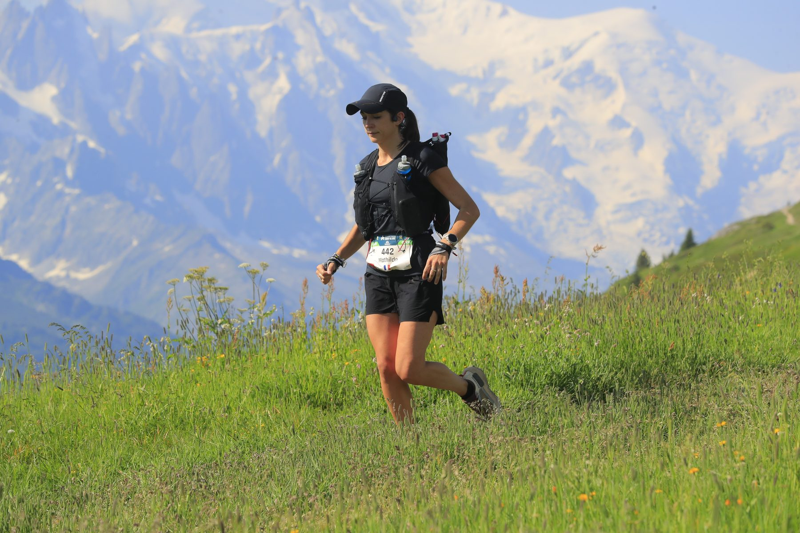
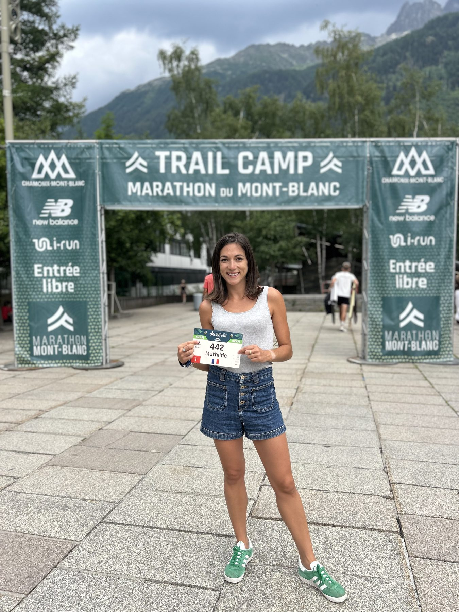
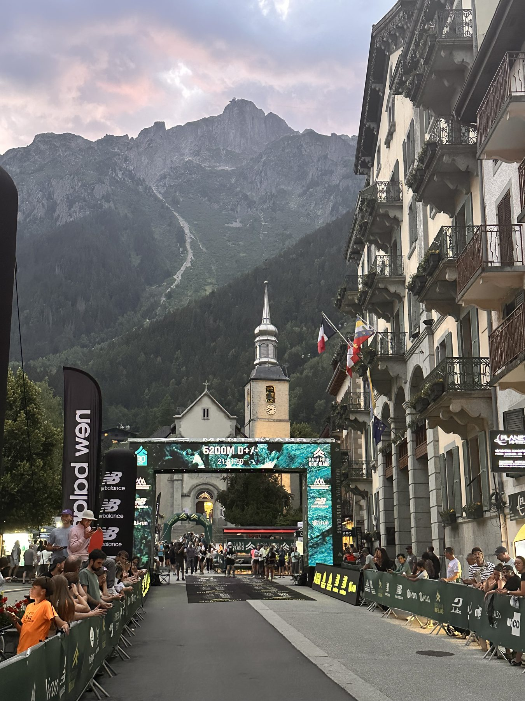

Top 8 % féminin sur 606 engagées et 325ᵉ sur 2 582 partants, un jour à plus de 30 °C sur la vallée. Partie 472ᵉ à Vallorcine, Mathilde BAUDELOCQ franchit la ligne 325ᵉ : 147 places reprises sur la seconde moitié de course, sur l'un des tracés les plus réputés du circuit international.
- Lieu
- ChamonixHaute-Savoie
- Distance
- 44 km
- Dénivelé
- 2 500 m D+
- Départ
- 07:15
🏔️ Le récit — 42K du Mont-Blanc
44 km / 2 500 m D+ — Dimanche 28 juin, 07:15
Mathilde BAUDELOCQ avait ce dossard en tête depuis longtemps. Le 42 km du Mont-Blanc, ce n'est pas une course de plus sur un calendrier : c'est le format historique, celui qu'on regarde de loin en se disant qu'un jour, peut-être. Dimanche 28 juin, à 07:15, elle était sur la ligne, dossard 442, au cœur de la ferveur de Chamonix, face à 2 582 partants dont 606 femmes. Le rendez-vous qu'elle attendait depuis des années.
Et une donnée qui allait tout dicter : la chaleur. Plus de 30 °C annoncés sur le village dans la journée. Le départ officiel à 07:15 plaçait les premières heures dans le frais et, mécaniquement, la seconde moitié de course dans la montée du thermomètre. Or le tracé concentre ses passages les plus exposés exactement là où le thermomètre monte : l'Aiguillette des Posettes plein soleil vers le 18ᵉ kilomètre, puis les singles cassants du col des Montets et la piste de ski de la Flégère en toute fin de course. Chaleur et profil se cumulaient au même endroit — c'est de ce croisement qu'est née la stratégie.
La stratégie : ne rien prendre à crédit
Le plan était clair, presque contre-intuitif : brider la première partie. Rouler juste, sans jamais forcer, jusqu'à Vallorcine — puis ne pas subir la seconde moitié. Mieux : y accélérer.
Sur le faux plat montant qui remonte la vallée vers Argentière, Mathilde tient sa ligne : 9,6 km en 55'40", 10,4 km/h de moyenne, aucun signal d'alerte. Puis vient l'Aiguillette des Posettes, plein soleil, sans un mètre d'ombre : 721 m de dénivelé positif à avaler en 5,2 km. Elle la monte sagement, à sa main, en laissant filer ceux qui s'y brûlent. La chaleur commence à s'installer. La grande descente technique jusqu'à Vallorcine est négociée proprement — 4,7 km en 30'28".
À Vallorcine, 23,6 km, elle pointe 472ᵉ au scratch, 57ᵉ féminine. C'est son point le plus bas du classement. C'est aussi exactement là que la course commence.

Le tournant : la nutrition comme arme
À partir de Vallorcine, la chaleur n'est plus une toile de fond, c'est un adversaire. Mathilde bascule sur son plan nutrition dédié aux fortes températures : gels et solides réduits au minimum, tout passe par le liquide et les minéraux. Un choix travaillé à l'entraînement, appliqué sans hésiter le jour J — alors que les troubles gastriques sont la première cause d'abandon en trail.
Le résultat est immédiat. Sur les singles cassants qui mènent au col des Montets, puis dans la longue remontée du balcon, elle ne perd plus une seconde. Elle en gagne. 397ᵉ au Bois Plagnolet (+75 places). 374ᵉ à la Flégère (+23). 350ᵉ à Charlanon (+24).
La Flégère, puis la descente qui achève
La montée de la Flégère est la signature cruelle de cette course : une piste de ski, en fin de parcours, entièrement à découvert. 496 m de D+ en 3,8 km, quand les jambes ont déjà quatre heures et demie de montagne dans les fibres. Mathilde la déroule sans céder de terrain.
Reste la descente finale sur Chamonix : 6,1 km à 9,2 km/h de moyenne, sur ce qui reste de quadriceps. Elle passe la ligne place du Triangle de l'Amitié en 6 h 21'09".
Ce que dit le chrono
49ᵉ femme sur 606 engagées. 325ᵉ au scratch sur 2 582 partants. Soit le top 8 % féminin et le top 13 % général, sur l'un des plateaux les plus denses du trail international — un jour de canicule.
Mais le vrai marqueur est ailleurs, dans la courbe : +147 places au scratch et +7 places au féminin reprises entre Vallorcine et l'arrivée. Aucun coup de chaud, aucune improvisation, aucun mètre concédé sur la seconde moitié. Le plan de course a été exécuté à la lettre, du premier kilomètre au dernier.
Ce n'est pas un jour de grâce. C'est une progression qui se construit, séance après séance, et qui se lit désormais dans les classements.
Résultats officiels — Mathilde Baudelocq
- Temps6 h 21'09"
- Classement Femmes49ᵉ / 606 — top 8,3 %
- Classement scratch325ᵉ / 2 582 — top 12,6 %
- CatégorieM0 F
- Dossard442
- StatutFinisher
Places reprises entre Vallorcine (23,6 km) et l'arrivée : +147 au scratch, +7 au féminin. Classements établis sur les engagés/partants annoncés par l'organisation.
📈 La course en chiffres
Le déroulé du négatif split, point de passage par point de passage
| Point de passage | km | Temps | Scratch | Femmes | D+ cumulé |
|---|---|---|---|---|---|
| Place du Triangle de l'Amitié (départ) | 0 | 0:00:00 | — | — | 0 m |
| Argentière | 9,6 | 0:55:40 | 467ᵉ | 53ᵉ | 375 m |
| Le Tour | 13,7 | 1:26:01 | 455ᵉ +12 | 52ᵉ | 652 m |
| Aiguillette des Posettes | 18,9 | 2:37:30 | 460ᵉ −5 | 54ᵉ | 1 373 m |
| Vallorcine | 23,6 | 3:07:58 | 472ᵉ −12 | 57ᵉ | 1 373 m |
| Bois Plagnolet | 31,8 | 4:30:39 | 397ᵉ +75 | 51ᵉ | 1 908 m |
| La Flégère (ravito) | 35,6 | 5:20:01 | 374ᵉ +23 | 51ᵉ | 2 404 m |
| Charlanon | 38,2 | 5:41:25 | 350ᵉ +24 | 49ᵉ | 2 454 m |
| Arrivée · Place du Triangle de l'Amitié | 44,3 | 6:21:09 | 325ᵉ +25 | 49ᵉ | 2 512 m |
Tableau à faire défiler horizontalement. Distances et dénivelés cumulés relevés par le suivi officiel du chronométrage. Données de parcours annoncées par l'organisation : 44 km · 2 500 m D+.
Trois segments à retenir
- Aiguillette des Posettes — 721 m D+ en 5,2 km, plein soleil : montée gérée, aucun rouge.
- Vallorcine → La Flégère — 12 km, +1 031 m D+ : bascule sur le plan nutrition chaleur, +98 places au scratch.
- Charlanon → Chamonix — 6,1 km de descente à 9,2 km/h : le chrono sécurisé jusqu'au bout.
🎥 La course en images


Le mot de Mathilde
Depuis le temps que je rêvais d'une course chamoniarde… Courir dans ce décor, dans cette ferveur, face au Mont-Blanc : quel spectacle.
Un chrono d'un peu plus de 6 h un peu décevant, mais face à la chaleur écrasante et à un choc émotionnel à 48 h du départ, la priorité était de se préserver et d'assurer. Au final, une belle 49ᵉ place féminine au milieu de ce plateau de folie : je n'en espérais pas tant.
Merci au Marathon du Mont-Blanc. Et j'espère de tout cœur à l'année prochaine.
Les éléments de préparation et de nutrition évoqués relèvent d'une stratégie individuelle et ne remplacent pas un suivi médical professionnel.
Retour aux communiqués